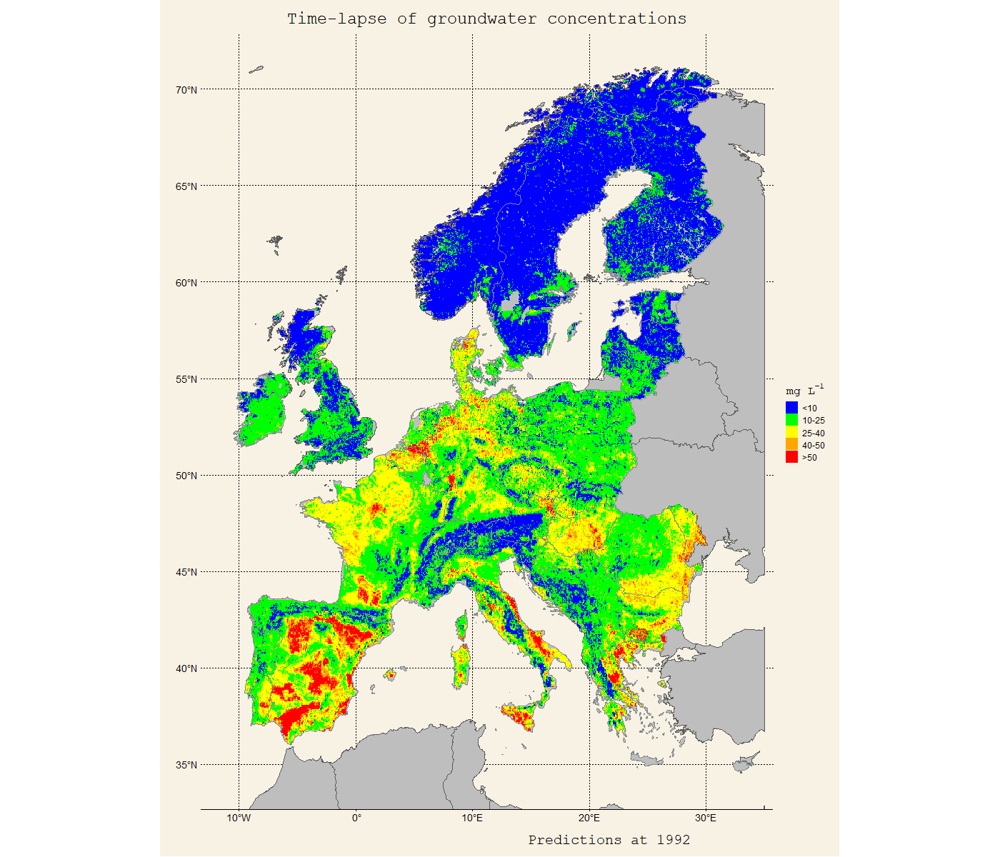
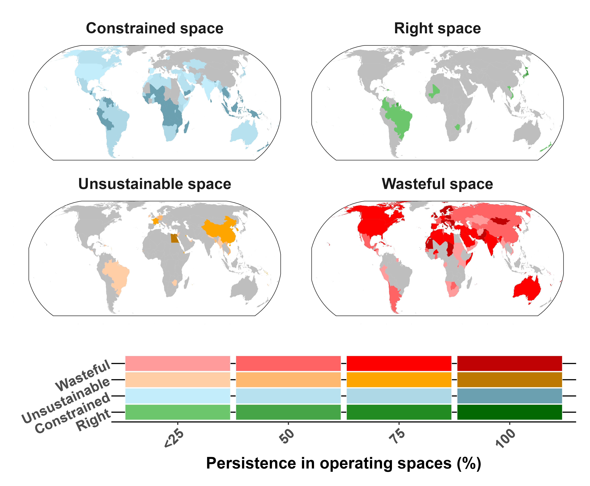

Scientific Findings
Key Research Contributions
Limitations: These findings are constrained by data gaps in developing regions and scale dependencies between field measurements and global assessments, particularly for nitrous oxide emissions and legacy nitrogen pools.
Irrigation water is a systematic and overlooked nitrogen input in agriculture
By combining field evidence and large-scale assessments, I showed that nitrogen supplied via irrigation water constitutes a non-negligible and spatially heterogeneous input to cropland systems.

Global distribution of nitrogen inputs via irrigation water for main crops (2010-2019)
Ignoring this input leads to biased nitrogen balances and distorted estimates of nitrogen use efficiency, causing misinformed fertilisation policies, particularly in irrigated and groundwater-dependent regions.
Current nitrate vulnerable zones in Europe fail to capture major groundwater pollution hotspots
By combining groundwater vulnerability, nitrogen inputs, and observed nitrate concentrations, I showed that there are widespread mismatches between designated Nitrate Vulnerable Zones and actual groundwater contamination risk.
Ref4

Timelapse of groundwater nitrate hotspots in Europe (1992-2019). Concentrations above 50 mg/L denote hotspots that should be within Nitrate Vulnerable Zones.
This reveals structural weaknesses in current regulatory approaches and highlights the need for evidence-based spatial targeting of water protection policies.
Large areas of cropland operate outside agronomically viable and environmentally safe nitrogen boundaries
By linking nitrogen inputs to crop productivity and environmental losses, I showed that inefficient nitrogen performance reflects structural constraints related to crop composition and yield ceilings.
Ref5

Global cropland areas operating outside agronomically safe and viable nitrogen boundaries
Constrained space: Nitrogen inputs are insufficient to meet crop demand, resulting in yield gaps and soil nutrient depletion.
Safe space: Nitrogen inputs support crop productivity while remaining within agronomically and environmentally acceptable limits.
Wasteful space: Nitrogen inputs exceed crop demand, leading to low nitrogen use efficiency and elevated losses.
Unsustainable space: Structural constraints prevent further efficiency gains, trapping systems outside viable long-term nitrogen use.
Efficiency gains are limited without substantial transformations in food production systems, as performance is often locked-in by structural drivers.
Scientific effort is misaligned with nitrogen pollution severity across global regions
By relating global research output to cropland nitrogen surplus, I showed that there is a persistent mismatch between nitrogen pollution severity and scientific effort across regions.
Ref6

Relationship between nitrogen pollution (x-axis) and scientific output (y-axis) across global regions, highlighting mismatches between research focus and environmental needs.
This diagnostic reveals structural barriers in the science-policy interface, where regions with severe nitrogen problems receive insufficient research attention, while areas with lower pollution intensity attract disproportionate scientific effort.